|
МИНИСТЕРСТВО |
МИНИСТЕРСТВО |
ИНСТРУКЦИЯ
ПО ПРОЕКТИРОВАНИЮ И УСТАНОВКЕ
ПОЛИМЕРНЫХ ОПОРНЫХ
ЧАСТЕЙ МОСТОВ
ВСН 86-83
Минтрансстрой
Утверждена Министерством транспортного
строительства и Министерством путей сообщения
10 февраля 1983 г. № ГТ-139/П-5284
Согласована с Госстроем СССР
(№ ДП-2806-1 от 19.05.82) и Минавтодором
РСФСР (№ HT-16/467 от 03.06.82)
МОСКВА 1983
С введением в действие настоящей Инструкции утрачивают силу «Технические указания по применению в мостах опорных частей из полимерных материалов» (ВСН 86-71 Минтрансстроя).
Инструкция разработана Союздорнии с участием НИИмостов на основании научно-исследовательских и проектных работ, выполненных Союздорнии, НИИРПом, НИИмостов, Киевским филиалом Союздорпроекта, Гипротрансмостом, Ленгипротрансмостом с учетом опыта изготовления опорных частей Черкесским заводом РТИ, Мостостроями-1, 3, 5, а также опыта применения аналогичных опорных частей за рубежом.
Инструкция составлена канд. техн. наук С.Н. Пшеничниковым при участии инженеров А.Б. Кувшинова, Н.В. Самариной (Союздорнии), канд. техн. наук Р.З. Маниловой (НИИмостов), канд. техн. наук В.И. Шестерикова (Гипродорнии).
При составлении учтены замечания и предложения Главного управления пути МПС, Киевского филиала Союздорпроекта, Ленгипротрансмоста.
|
Министерство транспортного строительства (Минтрансстрой), Министерство путей сообщения (МПС) |
Ведомственные строительные нормы |
ВСН 86-83 Минтрансстрой, МПС |
|
Инструкция по проектированию и установке полимерных опорных частей мостов |
Взамен «Технических указаний по применению в мостах опорных частей из полимерных материалов» ВСН 86-71 |
1.1. Требования настоящей Инструкции должны соблюдаться при проектировании, установке и приемке в эксплуатацию автодорожных, городских и железнодорожных мостов с опорными частями, изготовленными из полимерных материалов - резины и фторопласта.
1.2. Опорные части из полимерных материалов применяют, как правило, по типовым проектам, утвержденным в установленном порядке.
В железнодорожных мостах разрешается применять опорные части из полимерных материалов, изготовленные только в заводских условиях по проектам, утвержденным в установленном порядке, и принятые заводской инспекцией.
1.3. Опорные части подразделяют на резиновые, резинофторопластовые и стаканные.
В резиновых опорных частях угловые и линейные перемещения опорных узлов пролетных строений обеспечиваются деформацией резины, привулканизованной к стальным листам арматуры.
В резинофторопластовых опорных частях угловые перемещения опорных узлов пролетных строений обеспечиваются деформацией резины, привулканизованной к стальной арматуре, а линейные, в основном, скольжением по антифрикционной прокладке из фторопласта.
В стаканных опорных частях угловые перемещения опорных узлов пролетных строений обеспечиваются перемещением резиновой прокладки, заключенной в стальной обойме, а линейные - скольжением по антифрикционной прокладке из фторопласта.
|
Внесена Государственным всесоюзным дорожным научно-исследовательским институтом (Союздорнии) и Научно-исследовательским институтом мостов (НИИмостов) |
Утверждена Министерством транспортного строительства
и Министерством путей сообщения |
Срок введения - 1 июля 1983 г. |
1.4. По характеру работы опорные части подразделяются на подвижные, допускающие линейные и угловые перемещения опорных узлов пролетных строений во всех направлениях; линейно-подвижные, допускающие линейные перемещения только в одном направлении, а угловые - во всех направлениях; неподвижные, допускающие только угловые перемещения опорных узлов пролетных строений.
1.5. Опорные части из полимерных материалов, в зависимости от марки резины, применяют в мостах, расположенных в климатических районах со следующими расчетными* минимальными температурами воздуха:
НО-68-1 ИРП-1347
Мосты автодорожные и городские, в том числе путепроводы...... - 40 °С - 55 °С
То же железнодорожные..................................................................... - 35 °С - 50 °С
* Расчетную минимальную температуру воздуха принимают в соответствии с главой СНиП по строительной климатологии и геофизике; для бетонных и железобетонных конструкций - среднюю температуру наиболее холодной пятидневки; для стальных конструкций - среднюю температуру наиболее холодных суток.
1.6. Резиновые опорные части применяют преимущественно в разрезных пролетных строениях, а резинофторопластовые - в неразрезных и температурно-неразрезных пролетных строениях, т.е. в тех случаях, когда резиновые опорные части не обеспечивают требуемых линейных перемещений опорных узлов пролетных строений.
Стаканные подвижные и линейно-подвижные опорные части устанавливают в тех случаях, когда при величине опорной реакции более 4 МН невозможно использовать резинофторопластовые опорные части. Стаканные неподвижные опорные части применяют для установки разрезных и неразрезных пролетных строений.
1.7. Опорные части из полимерных материалов применяют в конструкциях мостов, допускающих возможность их замены.
1.8. Опорные части из полимерных материалов должны быть изготовлены по соответствующим техническим условиям, утвержденным в установленном порядке, резиновые опорные части - по ТУ 38-105-1299-79 Миннефтехимпрома СССР на резиновые опорные части.
1.9. Для опорных частей следует использовать материалы, приведенные в табл. 1.
Таблица 1
|
Материал |
Нормативный документ |
|
|
Резиновая опорная часть |
Стальной лист |
ТУ 35-1223-78 Минтрансстроя |
|
Резина НО-68-1 или ИРП-1347 |
ТУ 38-105-1299-79 Миннефтехимпрома СССР |
|
|
Герметик 51Г-14 |
ТУ 38-105-1255-78 Миннефтехимпрома СССР |
|
|
Резиновая прокладка стаканных опорных частей |
Резина ИРП-1347 |
ТУ 38-105-1299-79 |
|
Антифрикционная прокладка из фторопласта |
Фторопласт, сорт 1 и 2 (незакаленный) |
ГОСТ 10007-80Е |
|
Уплотнительные шайбы |
Медная полоса |
ГОСТ 495-77* |
|
Листы холоднокатаные латунные Л-62ПТ |
ГОСТ 931-78 |
|
|
Полированный лист |
Хромоникелевая сталь 12Х18Н10Т |
|
|
Эмали для внутренних поверхностей стаканных опорных частей |
Эмаль ПФ-115, ЭП-51 |
ГОСТ 6465-76* ГОСТ 9640-75* |
|
Смазка для резиновых прокладок |
Смазка мостол |
ТУ 38-40-13-14-80 Миннефтехимпрома СССР |
|
Смазка для фторопластовых прокладок |
Мазь ЦИАТИМ-221 |
ГОСТ 9433-80 |
|
Монтажные болты |
Капролон |
|
|
Фартук стаканных подвижных опорных частей |
Резина НО-68-1 |
ТУ 38-105-1299-79 |
|
Эластоискожа-Т (ЭИК-Т) |
ТУ 17-21-39-24-81 Минхимпрома СССР |
2.1. Участки железобетонных элементов опор (оголовков, ригелей, насадок) в местах установки на них опорных частей и участки железобетонных пролетных строений в местах их опирания на опорные части необходимо армировать.
При наличии на поверхности элементов опор уклонов для стока воды, а в железнодорожных мостах во всех случаях, опорные части следует располагать на подферменных площадках высотой не менее 15 см.
2.2. Расстояние от края резиновых (резинофторопластовых) опорных частей до края элементов опор, на которых они располагаются, и до края армированных опорных площадок железобетонных пролетных строений должно быть не менее 3 см в направлении поперек оси моста и 5 см вдоль. Расстояние от края стаканных опорных частей до края соответствующих железобетонных элементов опор и пролетных строений должно быть не менее 15 см.
Железобетонные пролетные строения, как правило, не должны иметь стальных закладных деталей в зоне контакта с резиновыми опорными частями. Если в опорном узле плиты или балки имеется стальная закладная деталь, то расстояние от ее края до края резиновой опорной части в направлении поперек оси моста должно быть не менее 5 мм.
2.3. При использовании опорных частей из резины НО-68-1 опорные листы стальных и клееных деревянных пролетных строений, стальные закладные детали железобетонных пролетных строений, балок или плит, а также стальные клиновидные прокладки, как правило, должны иметь стальные упоры, исключающие возможность угона пролетных строений вдоль и поперек оси моста.
2.5. Опорные узлы пролетных строений в местах опирания на стаканные или резиновые (резинофторопластовые) опорные части должны быть жесткими.
Между полимерными опорными частями и опорными листами стальных пролетных строений необходимо устанавливать жесткие стальные прокладки, обеспечивающие передачу распределенной нагрузки от опорных частей на стенки главных ферм или балок.
2.6. В конструкции высоких (более 4 - 5 м) автодорожных и городских мостов для подъемки пролетных строений или отдельных балок следует предусматривать возможность использования домкратов, устанавливаемых сверху на опоры рядом с опорными частями.
В пролетных строениях мостов больших пролетов (более 30 м) над опорами надлежит предусматривать поперечные домкратные балки или же ниши в верхней части опор и другие устройства с целью закрепить в них металлоконструкции, необходимые для установки домкратов и обстройки.
2.7. В железнодорожных мостах во всех случаях должна быть обеспечена возможность подъемки пролетных строений и замены опорных частей без устройства временных опор с установкой домкратов сверху опоры.
2.8. В автодорожных и городских мостах и в путепроводах с невысокими опорами допускается для подъемки пролетных строений учитывать возможность использования временных опор, опирающихся на грунт или фундамент постоянной опоры.
3.1. Под опорным узлом балок или плит пролетного строения вдоль оси моста необходимо располагать только одну опорную часть, а поперек оси моста допускается располагать несколько одинаковых опорных частей при условии обеспечения равномерной передачи на них опорной реакции.
3.2. Пролетные строения в автодорожных и городских мостах допускается устанавливать на резиновые, резинофторопластовые и стаканные подвижные опорные части, не имеющие анкерного крепления к опорам и пролетным строениям.
Опорные части автодорожных и городских мостов в сейсмических районах, как правило, должны быть заанкерены в пролетных строениях и опорах.
В каждом опорном ряду (поперек оси моста) одну из резинофторопластовых или стаканных подвижных опорных частей предусматривают линейно-подвижной или же, для исключения поперечного смещения пролетного строения, устанавливают упоры.
3.3. Разрезные пролетные строения железнодорожных мостов должны опираться одним концом на неподвижные, другим - на линейно-подвижные опорные части.
При применении в железнодорожных мостах резиновых или резинофторопластовых опорных частей в опорных узлах пролетных строений следует предусматривать специальные стальные детали - упоры, которые крепят к опорам и к пролетным строениям. Стаканные опорные части в железнодорожных мостах необходимо крепить к опорам и к пролетным строениям анкерами.
3.4. Опорные части, как правило, должны располагаться горизонтально. Стальные клиновидные прокладки, используемые в мостах, расположенных на уклонах, надлежит устанавливать на резиновые опорные части.
В мостах, расположенных на уклоне, пролетные строения которых передают опорам горизонтальные усилия через неподвижные опорные части или упоры, допускается опорные части располагать на уклоне, равном уклону пролетных строений.
В автодорожных и городских мостах, пролетные строения которых располагаются на ригеле, имеющем поперечный уклон относительно оси моста в обе стороны, и состоят из объединенных друг с другом в поперечном направлении балок и плит, допускается устанавливать резиновые опорные части на подферменные площадки, имеющие уклон, равный поперечному уклону проезжей части моста.
4.1. Резиновые опорные части подразделяют на три вида: обычные (рис. 1, а), составные по высоте (рис. 1, б) и анкеруемые в пролетных строениях и опорах (рис. 1, в). Резиновые опорные части, изготавливаемые из резины ИРП-1347, имеют боковую защитную оболочку из резины НО-68-1 (рис. 1, г).
Рис. 1. Резиновые опорные части:
а - опорная часть; б - то же, составная по высоте; в - то же, анкеруемая в пролетном строении и опоре; г - резиновая опорная часть для мостов, эксплуатирующихся при низких отрицательных температурах; 1 - резина НО-68-1; 2 - промежуточные стальные листы; 3 - стальная шпонка; 4 - утолщенные наружные стальные листы; 5 - закладная деталь пролетного строения; 6 - резина ИРП-1347
4.2. Форма резиновых опорных частей в плане должна быть прямоугольной или круглой, а стороны прямоугольных или диаметр круглых опорных частей должны приниматься кратными 50 мм; наименьший размер стороны опорной части в плане - 100 мм.
4.3. Толщину верхнего и нижнего наружных слоев резины в опорных частях необходимо принимать не более 5 мм, толщину промежуточных слоев - кратной 1 мм, толщину бокового защитного слоя резины - равной 6 мм.
В опорных частях, изготавливаемых из резины марки ИРП-1347, боковой защитный слой следует выполнять из резины марки НО-68-1.
4.4. Толщина листов стали в опорных частях должна быть не менее 2 мм, а при толщине промежуточных слоев резины 9 - 12 мм - равной 3 мм и при толщине более 12 мм - равной 4 мм; толщина наружных листов стали - не менее 8 мм. Стальные клиновидные прокладки должны иметь толщину не менее 6 мм.
4.5. Составные по высоте опорные части объединяют друг с другом стальными шпонками (рис. 1).
4.8. Угол поворота опорных узлов пролетных строений или балок, расположенных на уклоне, при их установке на резиновые опорные части через слой цементного или полимерного раствора не учитывают, а в случае установки балок или плит пролетных строений непосредственно на резиновые опорные части принимают равным уклону пролетного строения, в сумме с углом поворота, принимаемому по п. 4.6.
4.9. Расчетное сопротивление резиновых опорных частей при осевом сжатии следует принимать по табл. 2.
Таблица 2
|
Относительная высота опорной части |
Расчетное сопротивление при осевом сжатии резиновой опорной части Rс, МПа |
|
|
Автодорожные и городские |
£ 0,25 |
15 |
|
0,35 |
10 |
|
|
0,45 |
7,5 |
|
|
Железнодорожные |
£ 0,2 |
12 |
|
0,3 |
8 |
Примечания. 1. Относительная высота опорной части - это отношение суммарной толщины всех слоев резины к наименьшему размеру опорной части в плане.
2. Промежуточные значения расчетных сопротивлений принимают по интерполяции.
4.10. Расчетные сопротивления резины сдвигу при внецентренном сжатии опорных частей со сдвигом следует принимать: для резины марки ИРП-1347 Rt = 4,0 МПа, марки НО-68-1 Rt = 4,5 МПа.
4.11. Деформация (тангенс угла) сдвига опорных частей при действии горизонтальных нагрузок и воздействий не должна превышать величин, указанных в табл. 3.
Таблица 3
|
Обозначение угла сдвига |
Величина тангенса угла сдвига резиновой опорной части в мостах |
||
|
автодорожных и городских |
железнодорожных |
||
|
Постоянные + перепад температуры (статические) |
tggg,n |
0,7 |
0,6 |
|
Временные (динамические) |
tggv,n |
0,3 |
0,2 |
|
Статические + динамические |
tggn |
0,9 |
0,7 |
Значение тангенса угла сдвига опорных частей, заанкеренных в пролетных строениях и опорах, при учете сейсмической нагрузки, принимают не более 2,0.
4.12. Вертикальная деформация опорных частей от временной подвижной нормативной нагрузки в железнодорожных мостах должна быть не более 1 мм.
4.13. При нормальном напряжении в опорной части от расчетной осевой нагрузки sd > 0,5Rc, расчетный угол поворота одного промежуточного слоя резины опорных частей следует определять по формуле
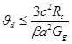 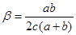
где с - толщина промежуточного слоя резины;
Rс - расчетное сопротивление при осевом сжатии, принимаемое по табл. 2;
b - коэффициент формы опорной части;
Gg - статический модуль сдвига резины при t = - 20 °C, принимаемый по табл. 4;
а - размер опорной части вдоль оси моста;
b - размер опорной части поперек оси моста.
Таблица 4
|
Условное обозначение модуля |
Величина модуля сдвига резины, МПа при температуре, °С |
|||||||||
|
- 20 и выше |
- 30 |
- 40 |
- 50 |
- 55 |
||||||
|
Резина марки ИРП-1347 |
||||||||||
|
Постоянные или перепад температуры (статические) |
Gg,t |
0,7 |
0,7 |
0,7 |
0,8 |
1,0 |
||||
|
Временные (динамические) |
Gv,t |
0,9 |
1,0 |
1,4 |
2,2 |
3,2 |
||||
|
Резина марки НО-68-1 |
||||||||||
|
Постоянные или перепад температуры (статические) |
Gg,t |
0,9 |
1,1 |
1,3 |
- |
- |
||||
|
Временные (динамические) |
Gv,t |
1,8 |
2,5 |
4,0 |
- |
- |
||||
Примечание. Промежуточные значения принимают по интерполяции.
4.14. Модуль упругости опорных частей при сжатии в диапазоне напряжения от 3 МПа до расчетного значения следует определять по формулам:
при действии временной нагрузки
Ev = 40 Gv,t(b - 2,5);
при действии постоянной нагрузки
Eg = 40 Gg,t(b - 2,5),
где Gv,t, Gg,t - соответственно динамический и статический модули сдвига резины при температуре t °С.
4.15. Коэффициент трения резины по стали и бетону следует принимать по табл. 5.
Таблица 5
|
Нормальное напряжение, МПа |
Коэффициент трения резины при температуре, °С |
||||
|
- 10 и выше |
- 30 |
- 50 |
- 55 |
||
|
Резина марки НО-68-1 |
|||||
|
Сталь |
2 |
0,18 |
0,22 |
0,25 |
- |
|
3 |
0,13 |
0,19 |
0,21 |
- |
|
|
5 |
0,09 |
0,16 |
0,20 |
- |
|
|
10 |
0,06 |
0,11 |
0,18 |
- |
|
|
15 |
0,05 |
0,08 |
0,12 |
- |
|
|
Бетон |
2 |
0,50 |
0,54 |
0,58 |
- |
|
3 |
0,39 |
0,46 |
0,52 |
- |
|
|
5 |
0,28 |
0,38 |
0,48 |
- |
|
|
10 |
0,16 |
0,27 |
0,41 |
- |
|
|
15 |
0,14 |
0,25 |
0,36 |
- |
|
|
Резина марки ИРП-1347 |
|||||
|
Сталь и бетон |
2 |
0,57 |
0,66 |
0,74 |
0,77 |
|
3 |
0,45 |
0,55 |
0,65 |
0,67 |
|
|
5 |
0,33 |
0,45 |
0,57 |
0,60 |
|
|
10 |
0,22 |
0,38 |
0,54 |
0,58 |
|
|
15 |
0,16 |
0,32 |
0,52 |
0,58 |
|
Примечание. Промежуточные значения принимают по интерполяции.
4.16. Нормальные напряжения в опорной части от расчетной осевой нагрузки следует определять по формуле
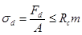
где Fd - вертикальная опорная реакция от расчетной осевой нагрузки;
А - площадь резиновой опорной части;
Rc - расчетное сопротивление при осевом сжатии, принимаемое по табл. 2;
т - коэффициент, учитывающий особенности изготовления, принимаемый равным 1,0 для резиновых опорных частей, изготовленных на заводе резинотехнических изделий, и равным 0,7 для изготовленных на неспециализированных предприятиях.
4.17. Касательные напряжения, возникающие в резине опорной части от расчетных нагрузок, должны удовлетворять условию
td = tv,d + th,d + tJ,d £ Rt,
где tv,d, th,d - касательные напряжения соответственно от расчетной осевой и горизонтальной нагрузки;
tJ,d - касательные напряжения, возникающие в результате поворота верхней плоскости опорной части относительно нижней от расчетных нагрузок и поворота, учитываемого по пп. 4.6 и 4.7.
Касательные напряжения от расчетной осевой нагрузки следует определять по формуле
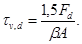
Касательные напряжения от расчетной горизонтальной нагрузки определяют по формуле
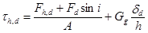
где Fh,d - расчетное усилие от торможения или силы тяги, ветра, центробежной силы;
i - угол уклона пролетного строения;
Gg - статический модуль сдвига при температуре t° = - 20 °С (см. табл. 4);
dd - линейное перемещение опорного узла пролетного строения от расчетного перепада температуры, ползучести и усадки бетона и расчетной временной подвижной нагрузки;
h - суммарная толщина слоев резины.
Касательные напряжения в резине от расчетных нагрузок при повороте вдоль моста верхней плоскости опорной части относительно нижней следует определять по формуле
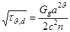
где J - угол поворота резиновой опорной части от расчетных нагрузок;
п - число слоев резины в опорной части;
Jg,d, Jv,d - угол поворота опорной части соответственно от расчетной постоянной и временной подвижной нагрузки;
m - коэффициент условий работы, принимаемый равным 1,0 для автодорожных и городских мостов и равным 1,2 для железнодорожных;
Ji - угол поворота, равный уклону пролетного строения;
J0 - начальный угол поворота (см. п. 4.7).
Примечание. В опорных частях с толщиной наружных слоев резины 5 мм при толщине промежуточных слоев резины до 10 мм включительно допускается принимать п равным числу всех слоев резины. При толщине промежуточных слоев резины от 10 до 15 мм допускается два наружных слоя резины толщиной по 5 мм учитывать в расчете как один промежуточный соответствующей толщины. При толщине промежуточных слоев более 15 мм допускается принимать п равным их числу, без учета наружных слоев резины.
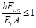
где Fv,n - вертикальная опорная реакция от нормативной временной подвижной нагрузки.
4.19. Тангенс угла сдвига опорной части, являющегося следствием смещения опорного узла пролетного строения относительно опоры при воздействии постоянных нагрузок и температуры, необходимо определять по формуле
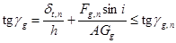
где dt,n - линейное перемещение опорного узла от нормативного перепада температуры, усадки и ползучести бетона;
Fg,n - вертикальная опорная реакция от нормативной постоянной нагрузки;
tggg,n - угол сдвига, принимаемый по табл. 3.
Тангенс угла сдвига опорной части при действии на нее нормативной временной нагрузки определяют по формуле
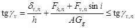
где dv,n - линейное перемещение опорного узла вследствие поворота опорного узла пролетного строения от нормативной временной подвижной нагрузки;
Fh,n - нормативное усилие от торможения или силы тяги, ветра, центробежной силы;
Fv,n - вертикальная опорная реакция от нормативной временной подвижной нагрузки;
tggv,n - тангенс угла сдвига, принимаемый по табл. 3.
Тангенс угла сдвига от действия суммарных нормативных постоянных и временных нагрузок определяют по формуле
tggg + tggv £ tggn.
4.20. Отсутствие зазоров в зоне контакта опорных частей с элементами пролетных строений и опор следует обеспечивать выполнением следующего условия:
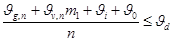
где Jg,n, Jv,n - угол поворота опорной части соответственно от нормативной постоянной и временной подвижной нагрузки;
Jd - расчетный угол поворота одного промежуточного слоя резины (см. п. 4.13);
т1 - коэффициент условий работы, принимаемый равным 1 для автодорожных и городских мостов и равным 1,2 для железнодорожных.
4.21. Если поворот или сдвиг происходит в направлении двух сторон опорной части, то результирующее напряжение и углы сдвига рассчитывают как вектор.
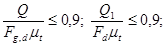
при
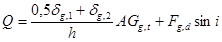
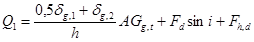
где Fg,d - вертикальная опорная реакция от расчетной постоянной нагрузки;
mt - коэффициент трения резины при расчетной отрицательной температуре, принимаемый по табл. 5;
Fd - вертикальная опорная реакция от расчетной нагрузки;
dg,1, dg,2 - линейное перемещение опорного узла пролетного строения соответственно от усадки и ползучести бетона и от расчетного перепада температуры;
Gg,t - статический модуль сдвига резины при температуре t °С;
Fh,d - усилие от торможения или силы тяги, ветра и центробежной силы.
При sd £ 20 МПа и невозможности соблюдения требований п. 4.22 следует предусматривать специальные конструктивные меры, исключающие скольжение резиновой опорной части и пролетного строения.
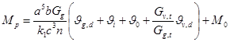
где M0 - условный начальный момент, равный 0,004 МН×м;
k1 - коэффициент, зависящий от отношения размеров а и b:
|
b/а |
0,5 |
0,67 |
0,75 |
1,3 |
1,5 |
2,0 |
|
k1 |
55 |
47 |
42 |
23 |
22 |
20 |
4.24. В железнодорожных мостах горизонтальное продольное усилие от торможения или силы тяги, а также горизонтальная составляющая опорной реакции от вертикальной нагрузки в мостах, расположенных на уклоне, передаются только на неподвижные опорные части.
Горизонтальное продольное усилие в опорах мостов с резиновыми опорными частями определяют, как правило, с учетом гибкости опор и жесткости опорных частей при сдвиге.
Горизонтальное продольное усилие, возникающее в неподвижных, линейно-подвижных и подвижных резиновых опорных частях вследствие перемещений опорных узлов пролетного строения от действия усадки и ползучести бетона и перепада температуры, определяется по формуле
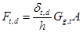
где dt,d - линейное перемещение опорного узла пролетного строения относительно опоры от расчетного перепада температуры, ползучести и усадки бетона.
Поперечные нагрузки от ударов подвижной нагрузки и центробежной силы воспринимаются неподвижными и линейно-подвижными опорными частями.
5.1. Стаканные опорные части подразделяют на три вида: неподвижные, линейно-подвижные, подвижные (рис. 2).
5.2. Диаметр крышки стаканных опорных частей должен быть меньше диаметра стакана на 0,5 мм, а при расчетном угле поворота крышка должна входить в стакан не менее чем на 10 мм. Толщина дна стакана - не менее 12 мм.
Рис. 2. Стаканные опорные части:
а - подвижная; б - линейно-подвижная; в - неподвижная с анкерным креплением; г - неподвижная без анкерного крепления; 1 - верхняя плита; 2 - лист из полированной нержавеющей стали; 3 - фторопластовая прокладка; 4 - крышка; 5 - резиновая прокладка; 6 - стальное кольцо; 7 - уплотнительные шайбы; 8 - дно опорной части; 9 - регулировочные болты; 10 - фартук; 11 - монтажные болты; 12 - направляющий элемент стакана; 13 - направляющий элемент верхней плиты; 14 - анкерная шпонка; 15 - анкерные болты
5.3. Резиновую прокладку изготавливают из резины марки ИРП-1347; необходимая толщина прокладки - 1/15 диаметра стакана, но не менее 20 мм, а диаметр на 3 ± 1 мм меньше диаметра стакана. По периметру прокладки необходимо выполнить паз, в котором располагают медные или латунные уплотнительные шайбы; ширина паза - на 1 - 2 мм меньше ширины уплотнительных шайб, а высота на 1 - 2 мм больше суммарной высоты шайб (рис. 3).
Рис. 3. Узел сопряжения крышки со стаканом:
1 - стальное кольцо; 2 - крышка опорной части; 3 - уплотнительные шайбы; 4 - резиновая прокладка; 5 - дно опорной части
Резиновые прокладки должны иметь углубления (аккумуляторы смазки) на верхней и нижней сторонах площадью, равной 20 - 30 % их площади, и глубиной 1 - 2 мм. При диаметре резиновой прокладки более 500 мм и толщине 60 мм она может быть составной в плане и по высоте.
Для смазки резиновых прокладок используют смазку мостол.
5.4. Медные уплотнительные шайбы представляют собой кольцо с одним разрезом, расположенным под углом 45° к оси шайбы. Шайбы толщиной не менее 2 мм и шириной не менее 10 мм с внутренней стороны могут иметь надрезы высотой не более 3 мм, которые выполняют с шагом до 30 мм.
Шайбы плотно сопрягают с внутренними стенками обоймы. Зазор между уплотнительной шайбой и стенками стакана должен быть не более 0,1 мм. Места разреза уплотнительных шайб следует взаимно смещать. Зазор между смежными концами установленных в опорную часть уплотнительных шайб не должен быть более 0,5 мм.
5.5. Внутреннюю поверхность стаканных опорных частей и уплотнительные шайбы необходимо покрывать эмалью, дающей глянцевую поверхность.
5.6. Стаканные опорные части железнодорожных мостов обеспечивают приспособлениями для анкеровки их в пролетном строении и опорах. Стаканные опорные части анкеруют без сварки.
5.7. Ось линейно-подвижных опорных частей должна быть отмечена на их верхней поверхности двумя отверстиями диаметром 3 мм, глубиной 6 мм.
На подвижных и линейно-подвижных опорных частях указывают величину допускаемых ими линейных перемещений и величину предварительного смещения элемента опорной части, прикрепленного к пролетному строению (верхней плите), относительно элемента (стакана), прикрепленного к опоре и выполненного до установки пролетного строения или балок на опорные части.
5.8. Антифрикционные фторопластовые прокладки укладывают в выточки, имеющиеся в крышке. Края выточек должны быть перпендикулярными к плоскости крышек. Не допускается скругление углов выточек.
5.9. Толщина фторопластовых прокладок должна быть не менее 4 мм. Прокладки заглубляют в выточки на половину их толщины. Высоту выступающей части фторопластовых прокладок принимают по табл. 6.
Таблица 6
|
Толщина фторопластовой прокладки, мм |
Высота выступающей части фторопластовой прокладки, мм |
|
|
4,0 |
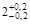 |
|
|
£ 600 |
4,5 |
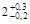 |
|
600 - 1200 |
5,0 |
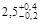 |
|
> 1200 |
6,0 |
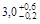 |
5.10. Фторопластовые прокладки должны иметь замкнутые канавки глубиной до 1 мм, заполняемые смазкой ЦИАТИМ-221 (ГОСТ 9433-80). Канавки выполняют штамповкой в холодном или горячем состоянии. При штамповке в горячем состоянии температура фторопластовых прокладок должна быть менее 200 °С. Площадь канавок для смазки должна составлять 10 - 20 % площади фторопластовых прокладок.
5.11. Фторопластовые прокладки в опорных частях применяют составными в плане с размером составной части не меньше 100 см2. Диаметр круглых фторопластовых прокладок (или ширина колец прокладок) должна быть меньше соответствующих выточек на 0,5 - 1 мм.
5.12. В качестве элемента, с которым контактируют фторопластовые прокладки, необходимо применять хромоникелевую с добавкой титана листовую полированную нержавеющую сталь толщиной не менее 1 мм с шероховатостью Rz £ 0,5 по ГОСТ 2789-73 (СТ СЭВ 638-77).
При расчетном смещении опорного узла пролетного строения лист нержавеющей стали должен перекрывать антифрикционные прокладки с запасом 25 мм.
5.13. Между листом нержавеющей стали и верхней стальной плитой должна быть предусмотрена диэлектрическая прокладка, в качестве которой может быть использована эпоксидная шпаклевка ЭП-00-10, армированная стеклосеткой.
Отсутствие электрического контакта между листом нержавеющей стали и элементами из обычной стали следует проверять на пробой электротоком при напряжении 12 В.
Между листом нержавеющей стали и верхней плитой не должно быть воздушных полостей. Их отсутствие проверяют простукиванием. Лист нержавеющей стали через диэлектрическую прокладку прикрепляют к опорному листу капролоновыми или фторопластовыми болтами.
5.14. Стаканные опорные части должны иметь ручки и другие приспособления, необходимые для транспортирования. Подвижные и линейно-подвижные опорные части должны иметь также регулировочные болты, необходимые для их установки в проектное положение.
Зазоры между крышкой и кольцом стакана неподвижных опорных частей, а также между верхним опорным листом и кольцом стакана подвижных и линейно-подвижных опорных частей защищают от пыли и грязи фартуком, изготовленным из эластоискожи-Т по ТУ 17-21-39-24-81 или из резины НО-68-1.
5.15. Конструкция стаканных опорных частей должна предусматривать взаимное монтажное крепление отдельных элементов, составляющих опорную часть.
5.16. Расчетное сопротивление при осевом сжатии резиновой прокладки в стальном стакане Rс принимают равным 25 МПа, при осевом Rn и внецентренном Rm сжатии фторопластовых прокладок, расположенных в выточках согласно требованиям п. 5.9 настоящей Инструкции, - соответственно 30 и 40 МПа.
5.17. Расчетный коэффициент трения m фторопластовых прокладок, контактирующих со стальным полированным листом, принимают по табл. 7.
Таблица 7
|
Коэффициенты трения m при температуре, °С |
||||
|
- 10 и выше |
- 50 |
|||
|
mmax |
mmin |
mmax |
mmin |
|
|
10 |
0,085 |
0,03 |
0,12 |
0,045 |
|
20 |
0,05 |
0,015 |
0,075 |
0,030 |
|
30 и более |
0,035 |
0,01 |
0,06 |
0,020 |
Примечания. 1. Для промежуточных значений температур и напряжений значения коэффициентов трения принимают по интерполяции.
2. Устойчивость положения конструкции против опрокидывания и скольжения определяют при mmin = 0.
Коэффициент трения фторопластовых прокладок, устанавливаемых в упорах, предотвращающих смещение пролетного строения в горизонтальном направлении, принимают независимо от температуры равным mmax = 0,07 и mmin = 0.
5.18. Нормальные напряжения в резиновых прокладках от расчетной опорной реакции определяют по формуле
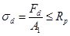
где A1 - площадь резиновой прокладки;
Rр - расчетное сопротивление резиновой прокладки при осевом сжатии (см. п. 5.16).
5.19. Реактивный момент, возникающий в стаканных опорных частях, следует определять по формуле
M = kGg,td3 при k = 8,3 (1 + 0,09sd) tgJ + 0,15.
где k - коэффициент, учитывающий особенность работы резиновой прокладки kmin = 0,3k;
Gg,t - статический модуль сдвига резиновой прокладки при температуре t °C, МПа (см. табл. 4);
d - внутренний диаметр стального стакана, м;
sd - нормальное напряжение в резиновой прокладке от расчетной осевой нагрузки, МПа;
J - угол поворота опорного узла пролетного строения от расчетных нагрузок и воздействий, град.
5.20. Нормальные напряжения во фторопластовых прокладках следует определять по формулам:
осевые:
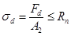
краевые:
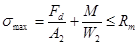
где Fd - вертикальная опорная реакция от расчетной осевой нагрузки;
А2 - площадь фторопластовых прокладок;
М - реактивный момент от суммарной расчетной нагрузки (см. п. 5.19);
W2 - момент сопротивления фторопластовых прокладок;
Rn, Rm - расчетное сопротивление фторопластовых прокладок соответственно при осевом и внецентренном сжатии (см. п. 5.16).
5.21. Силу трения в опорных частях определяют по формуле
Fm = mFdm,
где m - коэффициент трения при температуре t °C, определяемый по табл. 7;
т - коэффициент условий работы, учитывающий длительность действия на опорную часть нагрузок и воздействий.
При характере действия нагрузок или воздействия, близком к ударному (воздействие временных подвижных и сейсмических нагрузок), коэффициент т принимают равным 2. При длительном действии нагрузок и воздействий (постоянные, ветровые, перепад температуры) коэффициент т принимают равным 1. При воздействии строительных и ледовых нагрузок, а также нагрузки от навала судов значение m = 1 или m = 2 относят к случаям, когда данная нагрузка увеличивает (уменьшает) суммарное воздействие на рассчитываемый элемент моста и приводит по расчету к более неблагоприятным результатам.
5.22. Стальную обойму рассчитывают на внутреннее гидростатическое давление как толстостенную трубу без учета работы дна. При расчете стальной обоймы без учета выносливости гидростатическое давление принимают равным 30 МПа.
5.23. Горизонтальная нагрузка передается от пролетного строения опорам через крышку, объединяющую верхние и нижние элементы опорной части. Горизонтальную силу, передаваемую крышкой, допускается принимать распределенной по параболе на половине окружности кольца.
5.24. При расчете сварных швов между кольцом и дном стакана следует учитывать совместное действие гидростатического давления и горизонтальной нагрузки от внешних сил.
5.25. Сечения элементов опорных узлов пролетных строений в месте их опирания на стаканные опорные части должны быть рассчитаны на гидростатическое реактивное давление резины с учетом смещения в стадии эксплуатации равнодействующей опорной реакции относительно оси опорных узлов пролетных строений.
6.1. Стальной лист с выточками, в которых располагаются фторопластовые прокладки, может быть привулканизован к резиновой опорной части при ее изготовлении или свободно располагаться на ней. Для предотвращения смещения стальной лист, свободно расположенный на резиновой опорной части, должен по периметру иметь ограничители (рис. 4) высотой не менее 10 мм.
6.2. Расчет резиновой опорной части, являющейся деталью резинофторопластовой опорной части на нормальные нагрузки, а также на нагрузки, вызывающие поворот верхней плоскости опорной части относительно нижней, выполняют в соответствии с указаниями, приведенными в разд. 4. Касательные напряжения, горизонтальные усилия и деформации определяют по формулам:
Тангенс угла сдвига резиновой опорной части от нормативной постоянной нагрузки
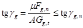
Тангенс угла сдвига резиновой опорной части от нормативной подвижной временной нагрузки
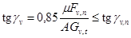
Касательные напряжения от расчетной горизонтальной нагрузки
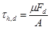
где m - коэффициент трения фторопласта, принимаемый по табл. 7;
Fg,n - вертикальная опорная реакция от нормативной постоянной нагрузки;
Fv,n - вертикальная опорная реакция от нормативной временной подвижной нагрузки;
Fd - вертикальная опорная реакция от расчетной осевой нагрузки;
А - площадь резиновой опорной части;
Gg,t - статический модуль сдвига резины опорной части при температуре t (см. табл. 4);
Gv,t - динамический модуль сдвига резины опорной части при температуре t (см. табл. 4).
Расчет фторопластовых прокладок выполняют на воздействие реактивного момента, определяемого согласно п. 4.23, и нормальных напряжений - согласно п. 5.20 с учетом расчетного сопротивления фторопластовых прокладок, приведенного в п. 5.16.
Рис. 4. Резинофторопластовые опорные части:
а - подвижная с резиновой опорной частью, имеющей один наружный утолщенный стальной лист; б - подвижная с обычной резиновой опорной частью; в - линейно-подвижная с обычной опорной частью; 1 - верхний стальной лист; 2 - лист из полированной нержавеющей стали; 3 - фторопластовая прокладка; 4 - резиновая опорная часть; 5 - фартук; 6 - фиксатор; 7 - нижний стальной лист; 8 - упор; 9 - стальной лист, привулканизованный к опорной части
6.3. Стальной лист, расположенный между фторопластовыми прокладками и резиновой опорной частью, следует рассчитывать на изгиб с учетом действия равномерно распределенных нагрузок с одной стороны от резиновой опорной части, а с другой стороны - от фторопластовых прокладок.
7.1. При установке полимерных опорных частей на опоры, а также балок и пролетных строений на опорные части следует обеспечивать плотное без зазоров опирание опорных частей на опоры и элементов пролетных строений на опорные части.
Не допускается установка неанкеруемых опорных частей на подсыпку из сухого цемента.
7.2. Масляные пятна на подферменных площадках в местах установки полимерных опорных частей необходимо удалить. Перед заполнением зазоров между опорной частью и опорной площадкой балок и пролетных строений контактирующую с раствором поверхность бетона следует обильно увлажнять.
На опорных площадках балок и пролетных строений или блоков необходимо наплывы бетона удалить и раковины заделать (см. п. 2.4).
7.3. Установку пролетных строений и балок на полимерные опорные части, омоноличивание температурно-неразрезных пролетных строений и замыкание неразрезных пролетных строений надлежит выполнять в последовательности и в диапазоне температур, указанных в проекте.
Не допускается крепить полимерные опорные части к пролетным строениям и опорам сваркой.
7.4. Опускать пролетные строения, балки и блоки на опорные части следует строго вертикально. Взаимное превышение опорных узлов конструкций, опускаемых на полиспастах, не должно быть более 0,01 их длины. Нельзя поворачивать балки, пролетные строения и блоки в плане после их установки на опорную часть.
7.5. При установке опорных частей и элементов пролетных строений на них в общих журналах производства работ следует указывать: дату установки балок или пролетных строений, а также замыкания конструкции; положение в плане относительно подферменных и опорных площадок; наличие предварительной регулировки стаканных подвижных и резинофторопластовых опорных частей; номер партии опорных частей и название завода-изготовителя.
7.6. На поверхности резиновых опорных частей не должно быть раковин, трещин, надрывов. Торцы стальных листов должны быть закрыты (при изготовлении) защитным слоем резины или герметика.
7.7. Опорные части устанавливают на ригели, насадки или подферменные площадки через слой цементного или полимерного раствора, которым выравнивают их поверхность. Отклонение выровненной поверхности от горизонтального (проектного) положения не должно превышать 1 °/оо, а местные неровности - 1 мм.
7.8. Балки и пролетные строения следует устанавливать согласно указаниям проекта непосредственно на резиновые опорные части или с использованием клиновидных стальных прокладок, которые должны иметь уклон, равный уклону пролетного строения.
7.9. В плоскости сопряжения опорных частей с опорами и пролетными строениями или балками не должно быть зазоров.
7.10. Подвижные и линейно-подвижные стаканные опорные части устанавливают на слой цементного или полимерного раствора по уровню, так чтобы верхняя плита и дно стакана были расположены в горизонтальной плоскости с отклонением не больше 1°/оо. Линейно-подвижные опорные части устанавливают так, чтобы проектное направление линейного перемещения опорного узла пролетного строения совпадало с направлением возможного линейного перемещения опорной части. Отклонение оси линейно-подвижной опорной части от направления проектного перемещения опорного узла пролетного строения не должно превышать 5 °/оо. При установке подвижных и линейно-подвижных опорных частей необходимо фиксировать несмываемой краской взаимное начальное положение элементов опорных частей, прикрепленных к пролетным строениям и опорам.
Горизонтальное положение подвижных и линейно-подвижных опорных частей обеспечивают регулировочными болтами. Ось линейно-подвижных опорных частей выверяют по визирным отверстиям, имеющимся на верхней поверхности.
7.11. Стаканные неподвижные опорные части допускается устанавливать с уклоном, равным уклону пролетного строения. Во всех случаях дно и крышка стаканных неподвижных опорных частей должны быть параллельны. Параллельность плоскостей, в которых расположено дно стакана и крышка, следует выдерживать, допуская погрешность не больше 2 %о.
7.12. Неподвижные стаканные опорные части крепят заранее к опорным узлам пролетных строений балок и блоков. После установки указанных конструкций на опоры омоноличивают анкерные болты, крепящие опорные части к опорам, и затем заполняют цементным или полимерным раствором зазор между опорной частью и подферменной площадкой. Допускается заранее устанавливать опорные части на клинья. После установки пролетных строений или блоков на временные прокладки силовое замыкание опорных частей с пролетным строением обеспечивают подбивкой клиньев, крепят опорные части к пролетному строению, бетонируют колодцы, в которых расположены анкерные болты, а затем заполняют зазор между опорной частью и подферменной площадкой.
7.13. Стальные пролетные строения устанавливают, как правило, с заранее прикрепленными к ним опорными частями. В мостах, расположенных на уклоне, между опорной частью и пролетным строением устанавливают согласно указаниям проекта стальную клиновидную прокладку, которая обеспечивает горизонтальное расположение опорной части.
7.14. При установке балок или блоков на подвижные или линейно-подвижные опорные части должно быть предусмотрено их временное крепление к опорам.
7.15. Резинофторопластовые опорные части устанавливают с учетом требований, предъявляемых к резиновым и стаканным опорным частям.
8.1. Опорные части осматривают при приемке сооружения в эксплуатацию и в сроки, предусмотренные руководствами по эксплуатации мостов.
При осмотре проверяют наличие резинового защитного слоя на торцах стальных армирующих листов, отсутствие в опорных частях трещин и раковин*, в бетоне подферменных и опорных площадках - трещин и других повреждений, а в элементах стальных пролетных строений, контактирующих с опорными частями, - местных изгибов и неровностей.
* Горизонтальные трещины, появившиеся на боковых сторонах резиновых опорных частей после сдачи моста в эксплуатацию глубиной 2 - 4 мм и длиной 30 - 40 мм, не снижают их прочности и долговечности.
При приемке железнодорожных мостов с полимерными опорными частями, кроме того, следует замерить вертикальные деформации опорных частей от временной подвижной нагрузки, которые не должны превышать 1 мм (см. п. 4.18).
8.2. Боковые стороны установленных опорных частей могут иметь волнистую поверхность. Число горизонтально расположенных волн должно быть, как правило, равно числу слоев резины в опорной части. При этом гребень волны должен располагаться примерно посередине каждого слоя резины, а впадины - в месте расположения торцов стальных листов, которыми армированы резиновые опорные части; высота гребня волны посередине стороны опорной части должна быть не более 1 - 2 мм, а боковые стороны опорных частей вблизи углов должны быть плоскими.
Угол наклона и направление сдвига боковых поверхностей опорных частей должны соответствовать указанным в проекте.
8.3. Наличие клиновидного зазора между резиновой опорной частью и опорной площадкой пролетного строения или балки является, как правило, дефектом установки. Для устранения этого зазора следует поднять пролетное строение и ввести в зазор стальную клиновидную прокладку или же плоскую стальную прокладку, а затем заполнить зазор между стальной прокладкой и опорным узлом полимерным или цементным раствором.
8.4. Угол между плоскостями, в которых расположены нижний и верхний листы стаканных опорных частей, не должен превышать установленного проектом. Величина угла определяется замером расстояния между этими плитами как вдоль, так и поперек оси моста.
СОДЕРЖАНИЕ